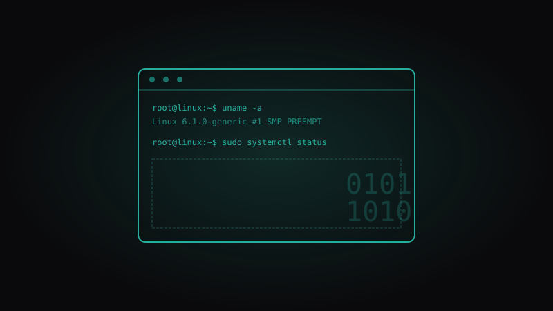

Professional Journey
Senior Engineer
Ringier Axel Springer Tech
Cloud Center of Excellence
- Multi-Cloud Governance: Enforcing policies across AWS, Azure, and GCP.
- IaC: Designing cloud-native solutions with Terraform, Terragrunt, and CloudFormation.
- Security & Identity: Integrated AWS Identity Center with Entra ID for secure SSO.
- Automation & CI/CD: Deployed GitHub Actions workflows for streamlined deployments.
- Innovation: Implementing Agentic Software Design & Development (SDD) approaches.
Senior Engineer
Ringier Axel Springer Tech
Media Platforms Engineering
- Developed Python-based automation for Media Asset Management (MAM).
- Administered high-availability Linux environments (Corosync, Tomcat, PostgreSQL).
- Technical consultant for external partners on AWS integration.
Engineer
Ringier Axel Springer Polska
Container Runtime & Orchestration
- Migrated PHP-based microservices to AWS EKS (Kubernetes).
- Containerized applications using Docker and optimized for security.
- Established GitOps workflows for automated deployments.
Engineer
DreamLab
Infrastructure & Virtualization Services
- Migrated core services to VMware and OpenStack platforms.
- Administered high-traffic services like Varnish and HAProxy.
Network Administrator
Axel Springer Polska
Core Network & Hosting Operations
- Maintained hosting environments with HAProxy and Varnish.
- Optimized solutions using Gentoo and Slackware Linux.
- Managed large-scale campus networks (HP/3Com, Cisco).
Linux Administrator
eo Networks
Managed Hosting & Support Team
- Managed high-traffic web hosting for financial institutions.
- Supported Java-based CMS on JBoss and PostgreSQL.
- Led a small administrative unit in a 24/7 environment.
Expertise Focus
Cloud Governance
Enforcing security and compliance across AWS, Azure, and GCP ecosystems.
Automation Pipelines
Streamlining delivery with Python, GitHub Actions, and GitOps workflows.
Container Orchestration
Scalable microservices management using AWS EKS and optimized Docker images.

Linux Systems
Deep expertise in Gentoo, Slackware, and high-availability server clusters.
Technical Arsenal
Cloud & IaC
AWS, Azure, GCP, Terraform, Terragrunt, CloudFormation.
Automation
Python, GitHub Actions, Agentic SDD, GitOps.
Containers
Kubernetes (EKS), Docker, Containerization.
Infrastructure
Linux (Gentoo, Slackware), OpenStack, VMware, HAProxy.
Security
IAM, Entra ID, AWS Identity Center, SSO, Multi-Cloud Governance.
Data & Ops
PostgreSQL, Redis, Varnish, Prometheus, Grafana.
Beyond the Console
Linux Enthusiasm
Diving into kernels and distributions since 2000. A lifelong passion for open-source.
AI & Agents
Exploring the frontier of Agentic Software Design to redefine how we build software.
Continuous Learning
Staying at the edge of cloud innovations and emerging technical standards.
Open Source
Contributing to and exploring new tools that empower the developer community.